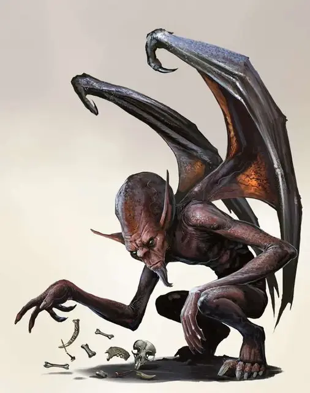

Бербаланг
Berbalang
Средняя Аберрация, обычно нейтрально-злая

Класс Доспеха 14 (природный доспех)
Хиты 49 (14к8 - 14)
Скорость 30 футов, летая 40 футов
| мод | спас | ||
|---|---|---|---|
| СИЛ | 9 | −1 | −1 |
| ЛОВ | 16 | +3 | +5 |
| ТЕЛ | 9 | −1 | −1 |
| мод | спас | ||
|---|---|---|---|
| ИНТ | 17 | +3 | +5 |
| МДР | 11 | +0 | +0 |
| ХАР | 10 | +0 | +0 |
Навыки Восприятие +2, История +5, Магия +5, Проницательность +2, Религия +5
Чувства истинное зрение 120 футов, пассивное Восприятие 12
Языки Все
Опасность 2 (450 опыта)
Бонус мастерства +2
Среда обитания Пустыня
Действия
Мультиатака. Бербаланг совершает одну атаку Укусом и одну атаку Когтями.
Укус. Рукопашная атака: +5 к попаданию, досягаемость 5 футов, одна цель. Попадание: 8 (1к10 + 3) колющего урона. плюс 4 (1к8) урона силовым полем
Коготь. Рукопашная атака: +5 к попаданию, досягаемость 5 футов, одна цель. Попадание: 8 (2к4 + 3) рубящего урона.
Использование заклинаний. Бербаланг накладывает одно из следующих заклинаний, используя Интеллект в качестве базовой характеристики и без использования материальных компонентов:
• Неограниченно: разговор с мёртвыми [speak with dead];
• 1/день: уход в иной мир [plane shift] (только на себя).
Бонусные действия
Призрачный двойник (Перезаряжается после короткого или продолжительного отдыха). Бербаланг бонусным действием может создать одного призрачного двойника самого себя на любом свободном пространстве на расстоянии 60 футов в пределах своей видимости. Пока существует двойник, бербаланг находится без сознания. Бербаланг может создать только одного двойника за раз. Двойник исчезает сразу же как бербаланг достигает 0 хитов, либо, когда бербаланг отстраняет его (не требует действия).
У двойника такие же характеристики и сведения, и поэтому вся накопленная информация двойника переходит обратно к оригиналу. Весь урон наносимый атаками двойника является уроном психической энергией.
Описание
Бербаланги скитаются среди окаменевших останков мёртвых богов, дрейфующих в Астральном Плане. Будучи помешанными на собирании секретов, как из богов, в которых они живут, так и из костей мёртвых существ, они призывают духов умерших существ и заставляют тех раскрыть свои секреты.
Бербаланги предпочитают разговаривать лишь мертвецами, в частности с духами, которых они призывают в надежде добыть больше секретов. Они записывают выслушанные истории на костях своих давно умерших рассказчиков, сохраняя таким образом информацию, собранную ими.
Стремление получить больше знаний побуждает бербалангов во всех их деяниях. Впрочем, хоть и бербаланги получают секреты с мертвецов, они не против последить за живыми существами, с целью получения больших знаний. Бербаланг может создать призрачного двойника самого себя и отправить его собирать информацию в других измерениях, следя за местоположением других богов и их прислужниках. Пока бербаланг в теле своего двойника, находясь в другом пространственном измерении, его настоящее тело находится в подсознательном состоянии и не может ни защитить, ни прокормить себя. Поэтому, бербаланг использует двойника лишь на короткий промежуток времени, чтобы вовремя вернуться в сознание к своему телу.
Знания, что копят бербаланги, делают их прекрасными источниками информации для более могущественных гуманоидов, путешествующих по Планам. Бербаланги игнорируют попрошаек [petitioners], только если те не расскажут бербалангам свои секреты, или не принесут кости весьма занятных существ. Некоторые гитъянки смогли найти способ сосуществовать с бербалангами, и иногда используют этих существ, чтобы проследить за своими врагами, либо присмотреть за своими детьми на Материальном Плане.